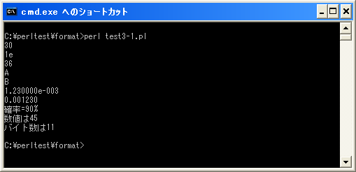

型指定子
フォーマット指定子の中で必須のものが型指定子です。型指定子は整形する値のデータ型を指定します。例えば整数として扱うのか浮動小数点数で扱うのかなどの指定です。型指定子は次のようなものがあります。
%d 10進数 %u 符号無し10進数 %o 符号無し8進数 %x 符号無し16進数 %e 指数形式の浮動小数点 %f 固定小数点形式の浮動小数点 %g 浮動小数点(%e 又は %f のどちらかの形式) %X %xと同じだがアルファベットを大文字で表示 %E %eと同じだが大文字のEを使用 %G %gと同じだが大文字のEを使用 %b 符号無し2進数
型指定子を変更することで同じ値であっても異なるデータ型の値にすることが出来ます。例えば次のような使い方となります。
printf("%d¥n", 30);
printf("%x¥n", 30);
printf("%o¥n", 30);
例えば数値の「30」に対して型指定子を10進数を表す「%d」を使うとそのまま「10」と言う文字列として表示されます。代わりに16進数を表す「%x」を使って書式を指定すれば「1e」と言う文字列として表示されます。8進数を表す「%o」を使って書式を指定すれば「36」と言う文字列として表示されます。
数値のデータ型以外の型指定子
数値に対するデータ型を決めるための型指定子の他に次のような型指定子が用意されています。
%% パーセントの文字そのもの %c 文字コードに対応した文字 %s 文字列 %p 値のポインタ %n 文字数を次の変数に格納
「%%」は「%」と言う文字を書式文字列の中で使用する場合に使います。これは「%」と言う文字が特殊な用途で使われているためであり、エスケープシーケンスと同じ扱いです。その為、対応する値は必要ありません。
「%c」は指定した値に文字コードに対応する文字となります。例えば「65」に対して型指定子「%c」を使うと対応する「A」と言う文字となります。
「%s」は指定した値に文字列をそのまま文字列として表示します。動的に文字列を指定したい場合に使います。
「%p」は指定した値に対するポインタを表示します。使い道は良く分かっていません。
「%n」は出力された文字数を対応する値の箇所に指定した変数に格納します。その為「%n」自体は何も出力しません。
my $count;
printf("num = %d%n¥n", 45, $count);
print "$count¥n";
上記の場合、「%n」の前に「num = 45」と言う文字列が出力されています。文字列の文字数は「8」文字であるため、「%n」に対応する値の箇所に指定された「$count」に数値の「8」が格納されます。
なお日本語を記述した場合はバイト数で数えるようです。使用している文字コードにもよりますがUTF-8で記述しいる場合は日本語1文字に付き3バイトとなります。
my $count;
printf("数値は%d%n¥n", 45, $count);
print "$count¥n";
上記の場合は「数値は45」と言う文字列が出力されています。バイト数にすると「11」となるため変数「$count」には「11」が格納されます。
サンプルプログラム
では簡単なプログラムで確認して見ます。
use strict;
use warnings;
use utf8;
binmode STDIN, ':encoding(cp932)';
binmode STDOUT, ':encoding(cp932)';
binmode STDERR, ':encoding(cp932)';
printf("%d¥n", 30);
printf("%x¥n", 30);
printf("%o¥n", 30);
printf("%c¥n", 65);
printf("%c¥n", 66);
printf("%e¥n", 0.00123);
printf("%f¥n", 0.00123);
printf("%s=%d%%¥n", "確率", 90);
my $count;
printf("数値は%d%n¥n", 45, $count);
print "バイト数は$count¥n";
上記を「test3-1.pl」の名前で保存します(文字コードはUTF-8です)。そしてコマンドプロンプトを起動し、プログラムを保存したディレクトリに移動してから次のように実行して下さい。

( Written by Tatsuo Ikura )

著者 / TATSUO IKURA
初心者～中級者の方を対象としたプログラミング方法や開発環境の構築の解説を行うサイトの運営を行っています。